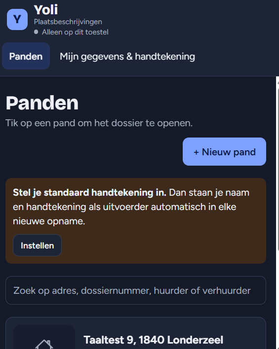

DSMT bouwt apps, platformen en websites op maat, en beheert vloten van wagens en machines. We starten bij het werk dat je mensen elke dag doen, en maken dat sneller.
Vertel wat je nodig hebtVan een app voor je technici tot een volledig platform voor je klanten. Op iPad, telefoon of web, met koppelingen naar je ERP, CRM of boekhouding.
Heldere sites voor kleine bedrijven en zelfstandigen. Snel online, makkelijk aan te passen.
Meer dan 8 jaar ervaring met bestelwagens, vrachtwagens en machines: aankoop, opbouw, werkplaatsplanning, keuringen, schadedossiers en GPS-tracking. We nemen het over of schuiven in bij je team.
Papier en Excel vervangen door iets dat werkt. Apps in Microsoft 365 en AI-tools die je mensen tijd besparen, zoals een assistent die het juiste onderdeel opzoekt.
De eerste module is een iPad-app voor intredes en uittredes. Tikken in plaats van typen, foto's met een eigen code, en een uittrede die zelf vergelijkt met de intrede. Nu in test.
Daarna volgen de vrijgave van de huurwaarborg via itsme en meer onderdelen voor experts, vastgoedkantoren, syndici, verhuurders en huurders.
Naar yoli.be
Onze eigen software voor vlootbeheer. Vervaldagen op datum, kilometers of draaiuren, gekoppeld aan GPS-tracking. We gebruiken ze zelf voor de vloten die we beheren.
Een app, een website, een vloot die beter moet lopen of een demo van Yoli. Bel gerust.